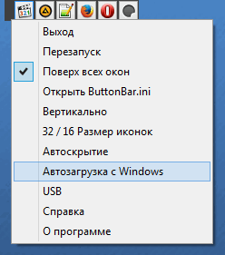
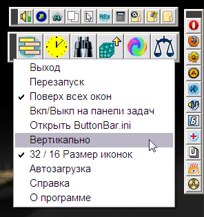

ButtonBar
Назначение
Панель кнопок для запуска программ.


Достаточно перетащить на панель ярлык, файл, папку и она появляется на панели и сохраняется в ButtonBar.ini. Левая часть панели предназначена для перетаскивания панели и имеет контекстное меню с пунктами "выход", "поверх всех окон". Поддерживаются все форматы файлов, папки (с поддержкой иконок), обработка ярлыков. Если иконка не соответствует действительности, то удалите символ "-" перед номером иконки. Контекстное меню кнопки имеет пункты "Удалить" и "Открыть файл в проводнике". Также можно перетаскивать кнопки, меняя последовательность.
В WinXP панель можно создать средствами OS, в Win7 такой возможности нет.
Опция USB позволяет запускать утилиты независимо от буквы диска. Буква диска автоматически заменяется на букву диска, с которого запущена утилита ButtonBar.
При включении автоскрытия панель выпадает взависимости от указанного края.
Если отключена опция "Поверх всех окон", тогда используйте горячую клавишу, чтобы скрыть/показать панель. Укажите в ButtonBar.ini параметр HotKey=Alt+1 и это будет горячей клавишей для скрытия и отображение панели кнопок. Это не работает в режиме "автоскрытие".
Панель автоматически расширяется по мере заполнения, запоминает позицию.
Описание ini-файла
[ButtonBar] ; секция параметров ButtonBar
xpos = 518 - Координаты панели
ypos = 1 - --//--
Topmost = 1 - Поверх всех окон
Color = 3f3f3f - цвет фона панели
Vertical = 0 - вертикально, иначе горизонтально
IconSize = 0 - Размер иконки 16 или 32
AutoHide = 0 - автоскрытие
Delay = 800 - Задержка пропадания панели при автоскрытии
DisplayChange = 1 - Реагировать на изменения размера экрана
HotKey = 0 - Горячая клавиша показа панели без автоскрытия
usb = 0 - Путь к программам с USB-диска
OpenToExplorer = Explorer.exe /select, - ком.строка для открытия папки файла
[Имя программы] ; секция параметров кнопки-программы
wrk = ; путь к рабочей папке (в 99% случаях папка исполняемого файла) (необязательный параметр)
exe = ; путь к исполняемому файлу
arg = ; параметры запуска
ico = ; файл иконки (ico, dll)
nmr = ; номер иконки, в случае dll (библиотеки иконок)
dsc = ; Описание программы (всплывающая подсказка кнопки)